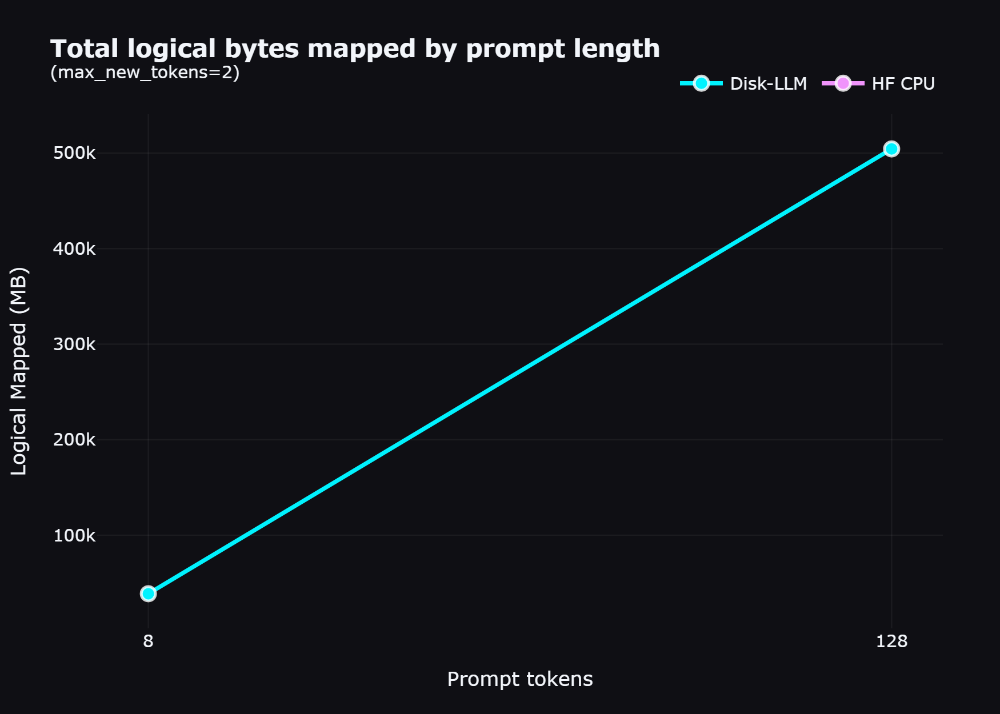
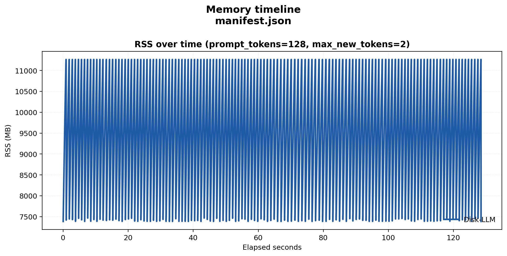
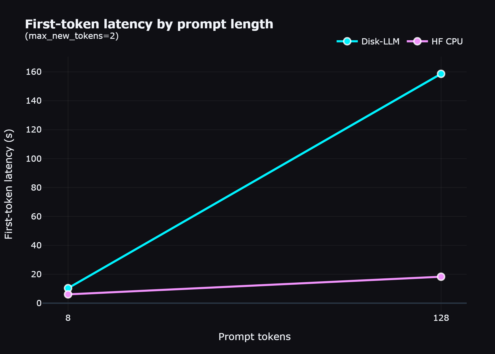

Inspectable Disk-Backed LLM Research Kit.
A researcher-first toolkit for exploring large language models on restricted hardware using Native NumPy Memmap. Optimized for observation and contribution, not production scale.
Project Philosophy
This is an opinionated research tool for contributors. If you need a high-performance production inference engine, use vLLM or llama.cpp.
What makes Disk-LLM uniquely novel?
Offloading weights to disk is not a new concept—production engines like llama.cpp heavily rely on mmap(), and accelerate has an explicit disk offloading feature. However, Disk-LLM stands out by functioning as a "Glass-Box Research Engine" rather than a "Black-Box Production Engine":
Engineered Layer-Sharding
Instead of mapping monolithic 15GB safetensors files and letting the Operating System randomly guess which pages to keep in memory, Disk-LLM proactively repacks weights into distinct architectural boundary files (Layer 0, Layer 1, etc.). This mathematically guarantees that the OS effortlessly handles highly predictable, sequential page-faults.
Naked Dependencies
Disk-LLM proves that you do not need complex C++, CUDA kernels, or massive framework bloat to understand fundamental compute limitations. By forcing the inference stack to rely entirely on standard Python, NumPy, and the OS's native file-system cache, researchers get an unadulterated view of pushing virtual memory mapped ceilings to their limits.
Telemetry as a First-Class Citizen
Usually, disk-swapping happens entirely in the background, making it a nightmare for researchers to compute bottlenecks. Disk-LLM exposes exactly when the disk is mapped, how much virtual memory is shifting (e.g. 500+GB arrays for lengthy generation contexts), and the latency penalty of each specific layer individually.
Engineered Sharding
Instead of massive monolithic checkpoints, Disk-LLM re-organizes weights into architectural-bound shards. This alignment ensures that when a transformer block requests its weights, the OS can fetch exactly those bytes from disk in a single sequential I/O operation.
Weight Packing Strategy
- 01Layer-sequential sharding
- 024KB page alignment
- 03Pre-computed tensor shapes
Runtime Observability
Current Layer
L-24/80
Disk I/O Latency
42.8ms
Memmap Status
ACTIVE
Tensor Hooks
12/12
Layer-Oriented Memmap Shards
Traditional LLM deployments struggle with fragmented memory. We shard models by architectural layers, allowing the OS-level memory mapper to treat the SSD as a primary cache with predictable page-fault patterns.
- layers Predictable sequential page access patterns.
Observable Runtime Environment
Inference shouldn't be a black box. Our runtime provides hooks into every stage of the transformer block, exposing internal states for research, debugging, and interpretive analysis.
- visibility Real-time activation hooks and weight probing.
Reproducible Performance
Logical Bytes Mapped vs Prompt Length
Notice how the physical RSS limits remain flat at ~11GB while the OS seamlessly scales the memory mappings upward in response to prompt length.

Peak RSS Memory Profile

First Token Latency Extrapolation
Disk-LLM parses weights directly out of SSD blocks. Cold start time scales linearly as layer sizes and prompt contexts increase.

~11 GB
Max Physical RSS
504 GB
Virtual Memory Mapped
Implementation Status
Last update: April 2026Convert & Inspect
# Install for research use
pip install -e .[hf,bench]
# Inspect a Hugging Face snapshot
disk-llm inspect --source-dir /path/to/Qwen3.5-9B
# Convert to layer-packed memmap shards
disk-llm convert /path/to/Qwen3.5-9B ./packed-qwen35
# Run inference with visible telemetry
disk-llm generate ./packed-qwen35/manifest.json --prompt "Hello" --show-telemetry
Conversion complete: 72 shards generated. [OK]
Telemetry active: Layer timing, RSS, tokens/sec [OK]
Target Users
Research & Contributors
Core Tech
NumPy Memmap
Optimization
Layer-Packing
Built for Contributors
Disk-LLM is written to be read. No complex abstractions, just clean Python and NumPy. We welcome pull requests for new model architectures, telemetry visualizations, and optimization strategies.